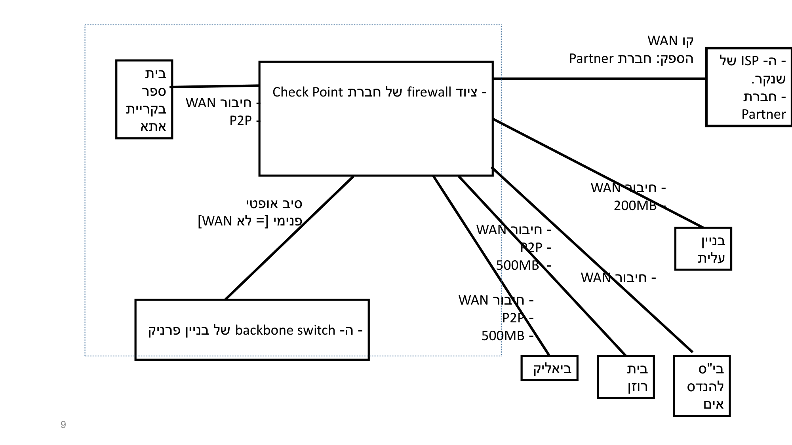
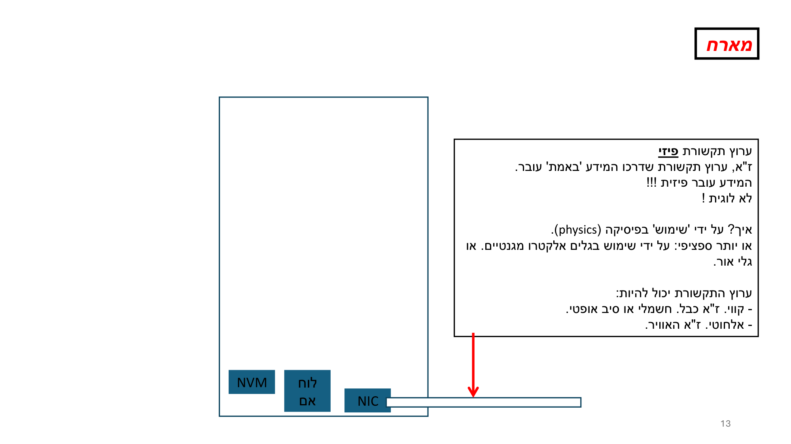
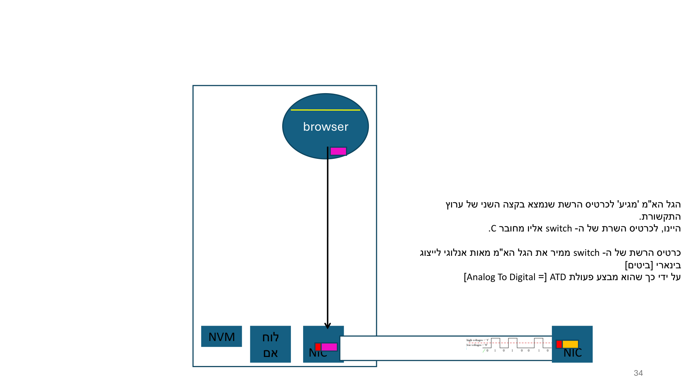

מבוא מורחב — רשתות, האינטרנט, פרוטוקולים
⏱ זמן משוער: 45 דק'
למה מתחילים כאן, ומה נלמד
אם אתם מתכנתים טובים אבל רשתות זה עולם חדש — זו נקודת הפתיחה המושלמת. במודול הזה נבנה את המושג "רשת מחשבים" בדיוק כמו שהמרצה בונה אותו בשיעור: מלמטה למעלה, קודם דוגמה קונקרטית ואחר כך הגדרה. נתחיל מרשת אמיתית שכולכם מכירים (רשת שנקר), נגדיר מהי רשת, נסתכל על הרשת כ"קופסה שחורה", ואז "נפתח את הקופסה" ונעקוב שלב-אחר-שלב אחרי מה שקורה כשמקלידים כתובת ב-browser.
לפי הסילבוס, מודול 1 עוסק ברשתות תקשורת בכלל ורשתות מחשבים בפרט, באינטרנט ובפרוטוקולי תקשורת. הספר המלווה הוא Kurose & Ross, Computer Networking: A Top-Down Approach, מהדורה 8, פרק 1. המרצה הוא יצחק נודלר, והקורס מתמקד במשפחת הפרוטוקולים TCP/IP בדגש על האינטרנט.
מקור: syllabus.pdf
הדוגמה המרכזית: רשת שנקר
המרצה לא פותח בהגדרה מהספר. הוא פותח בדוגמאות מייצגות של רשתות מחשבים מודרניות, ומתחיל ברשת אמיתית שהסטודנטים מכירים — רשת שנקר. זו "הדוגמה החתומה" שלו לשאלה "מהי רשת פיזית".
בשנקר יש שתי רשתות נפרדות (שני VLAN-ים): VLAN1 = הרשת הקווית, ו-VLAN2 = הרשת האלחוטית. כל ה-switches בשנקר הם Layer 3 (אין יותר Layer 2), כל קומה כוללת לפחות מתג אחד, וכולם מחוברים ל-backbone בתצורת כוכב באמצעות סיבים אופטיים. בטרמינולוגיית Cisco אלה נקראים access switches.
במרכז הטופולוגיה יושב firewall של חברת Check Point. הוא מתחבר למעלה אל ה-ISP (חברת Partner, שבפועל רצה על תשתית בזק) דרך קו WAN; ולמטה/לצדדים אל מתג ה-backbone בבניין פרניק (דרך סיב אופטי פנימי — שאיננו WAN!) ואל אתרים מרוחקים כמו ביאליק, בית רוזן ובית ספר בקריית אתא דרך קווי WAN מסוג P2P (500MB / 200MB).

בצד האלחוטי, ה-firewall מתחבר לקונסולה של Cisco. כל ה-APs (מדגם Ruckus 500) מחוברים לקונסולה ומאורגנים כ-mesh. הקונסולה היא זו שמספקת את כתובות ה-IP ומאפשרת roaming: כשמכשיר אלחוטי מצטרף, הוא מתחבר ל-AP, ה-AP מעביר את בקשת ההצטרפות לקונסולה, והקונסולה מספקת את הכתובת.
מקור: L01-1 v2
מזהים של מכשיר ברשת (הגדרות למבחן)
מכשיר המחובר לרשת יכול להחזיק 2 מזהים:
- IP address — חובה (!!!!): רצף של 32 ביט או 128 ביט (32 = IPv4, 128 = IPv6; המרצה פשוט אומר "32 ביט או 128 ביט").
- host name — אופציונלי: מחרוזת תווים. נועד להקל על המשתמשים האנושיים.
פרטי מול גלובלי (ההופעה הראשונה של הרעיון): כתובת ה-IP של מכשיר ידועה רק בתוך רשת שנקר; היא לא ידועה "בחוץ". לכן, כשמחשב פונה למחשב מחוץ לרשת שנקר, הכתובת המקומית (הפרטית) חייבת להיות מוחלפת בכתובת גלובלית!!
בהתאם: DNS מקומי בשנקר "מכיר" את שמות ה-host המקומיים (למשל online.shenkar.ac.il), ואילו שם חיצוני כמו www.openai.com מתורגם על-ידי ה-DNS הגלובלי של האינטרנט — לא ע"י ה-DNS של שנקר.
🎓 הרחבה — לא נדרש למבחן: איך שנקר מקצה כתובות (DHCP / Active Directory)
בבנייני פרניק ומיטשל יש שני שרתי Microsoft (אחד MS Server 2016, אחד MS Server 2019). כל אחד מריץ Active Directory ומשמש בין היתר כ-DHCP server. הם מחוברים כ-"forest" (טרמינולוגיית Microsoft), ולכן מסתנכרנים ביניהם — כולל הקצאת כתובות IP. יחד הם מנהלים את תחום הכתובות הפרטיות: אחד מקצה בטווח 10.0.3.x והשני בטווח 10.0.12.x (שימו לב ש-10.0.x.x הוא טווח פרטי).
מקור: L01-1 v2
מהי רשת מחשבים? ההגדרה + הנקודה של TCP/IP
אחרי הדוגמה הקונקרטית מגיעה ההגדרה. שווה לשנן את שורת-האחת (ה"blue box" של המרצה, מצוטט מילולית):
“A modern network is a system of autonomous devices / communicating / over wired and wireless links / using protocols / to deliver digital services.”
הרכיבים (הרשימה האדומה):
- Devices — מחשבים, סמארטפונים, חיישני IoT, שרתים, מכוניות, שעונים חכמים.
- Links — כבלים, Wi-Fi, 5G, לוויין…
- Protocols — TCP/IP, HTTP, DNS…
- Services — Netflix, Google Drive, שיחת VoIP, בית חכם. "לאפשר שירותים לבני-אדם ולמערכות".
המרצה מדגיש שרשת כבר לא מחברת רק מחשבים: היא מחברת גם ציוד היקפי (מדפסות, מצלמות, מקרנים), רכבים, וכמות עצומה של חיישנים ובקרים → IoT (Internet of Things). ואז השאלה הרטורית שלו: אם כך, מה נשאר מ"רשת מחשבים קלאסית"? התשובה שלו: TCP/IP!!
למה TCP/IP חשוב היסטורית? הוא פותח במקור כדי לחבר רשתות שונות — "שונות" במובן של בעלות מנהלית שונה. רק מאוחר יותר הפך גם לטכנולוגיה של רשתות תחת בעלים מנהלי יחיד, כמו רשת שנקר. פעם רשתות ביתיות רצו על Novell או Apple (AppleTalk), ורשתות ארגוניות על IBM (SNA) או DEC (DECnet) — ובסוף (כמעט) כולן התכנסו לאותה טכנולוגיה: TCP/IP.
מקור: L01-1 v2
ציר הזמן ההיסטורי — ARPANET ו-TCP/IP (נבחן בתרגיל 1)
ציר ARPANET:
- 1969 — הקמת ארבעת הצמתים הראשונים: UCLA, SRI, UCSB, Utah.
- שנות ה-70 — התרחבות לרשתות אוניברסיטאיות וממשלתיות; פיתוח פרוטוקול NCP (Network Control Program).
- 1983 — מעבר רשמי ומלא של ARPANET מ-NCP ל-TCP/IP. היום המכונה "Flag Day".
ציר TCP/IP:
- 1974 — פרסום המאמר המכונן של Vint Cerf ו-Bob Kahn המציג את ארכיטקטורת ה-TCP.
- שנות ה-70 המאוחרות — פיצול ה-TCP ל-TCP ו-IP נפרדים.
- 1983 — אימוץ רשמי ב-ARPANET (Flag Day — ההצטלבות עם ציר ARPANET).
מקור: תרגיל 1
הרשת כ"קופסה שחורה" — ומה מטרת הקורס
מנקודת המבט של משתמשי הקצה (בני האדם), הדבר שנקרא "רשת" הוא קופסה שחורה שמסתירה את המורכבות מתחתיה (כבלים, נתבים, פרוטוקולים). המשתמשים מקבלים שירותים דרך אפליקציות רשתיות (Moodle, Google, WhatsApp, Netflix, בית חכם).
אחת ממטרות הקורס: להבין מה קורה בתוך הקופסה השחורה — לפחות את העיקר. המרצה מבחין בין שתי נקודות מבט:
- נקודת מבט של משתמש קצה — רואה רק את האפליקציות.
- נקודת מבט של מפתח אפליקציות רשתיות — כוללת הבנה של ממשק ה-sockets ועוד הרבה. זו נקודת המבט של מהנדס תוכנה, לא של משתמש רגיל.
מקור: L01-1 v2
סרטון: מה קורה כשמקלידים כתובת ב-browser
לפני שנפתח את הקופסה בעצמנו, הנה התמונה הכללית ב-5 דקות. שימו לב איך הבקשה עוברת מהדפדפן לשרת וחזרה — נראה בדיוק את השלבים האלה מיד אחר כך, במונחים של המרצה.
מה קורה בתוך הרשת: שלושת השלבים ו"אנטומיה של host"
עכשיו פותחים את הקופסה. כדי למקד את הדיון, נניח העברת מידע בין משתמשים אנושיים, שהאדם מפעיל אותה על-ידי הרצת אפליקציה מתאימה. העברת מידע ממחשב C (השולח/הלקוח) למחשב S (המקבל/השרת) מורכבת משלושה שלבים על ציר הזמן:
- שלב א' — רצף צעדים בתוך מחשב C.
- שלב ב' — הזזת המידע (הביטים) מ-C ל-S דרך הרשת שמחברת ביניהם. בתוך הרשת יש: ערוצי תקשורת (1 או יותר), ציודי תקשורת (0 או יותר), ו-hosts נוספים מלבד C ו-S (0 או יותר). האוסף יכול להיות ענק (עשרות ואף מאות), וזה מתורגם לאלפי צעדים.
- שלב ג' — רצף צעדים בתוך מחשב S.
ומה בתוך host? המרצה מצייר אותו כקופסה שבבסיסה שלושה בלוקים: NVM, לוח אם (motherboard) ו-NIC, ומהם יוצא הערוץ הפיזי:
- ערוץ תקשורת פיזי — הערוץ שדרכו המידע עובר באמת. פיזית!!! לא לוגית! איך? באמצעות פיזיקה — גלים אלקטרו-מגנטיים או גלי אור. הערוץ יכול להיות קווי (כבל חשמלי או סיב אופטי) או אלחוטי (= האוויר).
- NIC = Network Interface Card (כרטיס רשת) — מותאם לסוג הערוץ הפיזי (קווי-חשמלי / אלחוטי / קווי-אופטי).
- לוח אם — כשמדובר במחשב, כולל CPU רב-ליבתי, זיכרון ראשי (MM) ו-bus-ים.

מקור: L01-2 v2
לקוח–שרת: מי מבקש ומי משרת
המשתמש רוצה "לגלוש" — כלומר, במונחים טכניים, להביא את תוכן דף האינטרנט משרת שמארח את האתר, כדי שה-browser ירנדר אותו ויציג אותו. בשפת רשתות המחשבים: המשתמש רוצה service מהרשת, ומקבל אותו דרך network application. אפליקציית web היא דוגמה נפוצה מאוד לאפליקציה רשתית.
client–server application מורכבת מ-2 חלקים / 2 תוכניות: צד לקוח + צד שרת, הרצים על hosts שונים (client host ו-server host). צד הלקוח נקרא כך כי הוא מבקש משהו מהצד השני; צד השרת נקרא כך כי הוא משרת את הלקוח — נותן לו את מה שביקש.
ברמת התהליכים: client process יוזם קשר עם server process ומעביר לו request (בקשה) = אוסף ביטים. בתגובה, ה-server process מחזיר response (תשובה) = אוסף ביטים, בחזרה דרך הרשת.
מקור: L01-2 v2
המסע של בקשת HTTP — שלב אחרי שלב
זו הדוגמה הפתורה המרכזית של המודול: מה בדיוק קורה כשמקלידים כתובת ולוחצים Enter. עקבו אחרי הצינור הבא, ואז נפרק כל שלב ב"הצג פתרון".
שלב 1: המשתמש מספק URL (Uniform Resource Locator) — למשל www.google.com או online.shenkar.ac.il.
שלב 2: ה-browser מבצע parsing על ה-URL ומחלץ ממנו את ה-hostname של השרת ואת שם הקובץ המבוקש. אם אין שם קובץ — הוא משתמש בשם קובץ ברירת מחדל.
שלב 3: ה-browser מפעיל מודול (תת-תוכנית) שמממש communication protocol בשם http (hyper-text transfer protocol), ומורה לו לשלוח בקשה לתוכנית השרת. ההודעה נקראת http request message.
שלב 4: ה-http (א) מקים קישור TCP עם ה-http בתוכנית השרת; (ב) מכין את הודעת הבקשה. ההודעה היא בעצם אוסף בתים (כל בית מייצג תו), עם פורמט: הבתים מאורגנים כאוסף שדות.
שמות: ה-http של ה-browser נקרא http client; תוכנית השרת נקראת לצורך הדיון WSP (Web Server Program), ובתוכה מודול http server.
ה-http client מקים קישור TCP עם ה-http server. מהו "קישור TCP"? יורחב מאוד בהמשך הקורס. אבל הנקודה שיש לשנן עכשיו:
"סולם הדיוק" — מי בעצם מדבר עם מי:
- העברת מידע בין 2 ה-hosts (לקוח ושרת);
- מדויק יותר — בין client process (ה-browser) ל-server process (ה-WSP);
- מדויק אף יותר {!!!} — בין ה-http client (חלק מ-client process) ל-http server (חלק מ-server process).
שלב 5: ה-http מבצע send() — שולח את הודעת הבקשה דרך קישור ה-TCP שהקים. השורה שנראית על השקף:
GET file-name HTTP/1.1 CRLF …
נניח שההודעה כולה = 1300 בתים. הם מחולקים לשדות: 3 הבתים הראשונים = שדה אחד (GET); הבתים בין הרווח הראשון לשני = שדה שם-הקובץ; 8 הבתים הבאים HTTP/1.1 = השדה השלישי; וכן הלאה.
מי מגדיר את המבנה הפנימי? אוסף חוקים קשיח מאוד — כל מערכת החוקים נקראת http, וכתובה במסמך specification. מהנדסי התוכנה שבנו את ה-browser "תרגמו" את החוקים לקוד (למשל ב-C); כך גם מהנדסים אחרים שבנו את ה-WSP — שתי קבוצות מהנדסים שונות {!!!}, אותו פרוטוקול.
מקור: L01-2 v2
מהודעה ל-packets ולאות פיזי (DTA / ATD)
אחרי ה-send(), ההודעה צריכה להגיע ל-NIC כדי שהוא ישלח אותה פיזית דרך הערוץ. זה לוקח אלפי צעדים. ביניהם, כל הבתים של ההודעה מחולקים ונארזים ליחידות נתונים בשם packets.
ה-NIC מייצר carrier signal — גל אלקטרו-מגנטי ש"נושא" את הביטים. הוא מבצע המרה של בתי ה-packet לאות אנלוגי: DTA (Digital To Analog). הגל נע דרך הערוץ אל ה-switch (או ה-router הביתי), ובקצה השני ה-NIC המקבל ממיר את הגל האנלוגי חזרה לביטים: ATD (Analog To Digital).

מקור: L01-2 v2
Packet Switching — שיטת ההעברה של רשתות מחשבים
חידוד לגבי ה-packets: העברת מידע בין 2 hosts כרוכה לרוב בהמון בתים (אלפים, עשרות אלפים, מיליונים) — למשל העלאת קובץ לאתר הקורס, הורדת קובץ, זרם וידאו ב-Zoom, או זרם קול. ברשתות מחשבים ההעברה נעשית ביחידות קטנות יחסית: הבתים לא נשלחים "במכה אחת" אלא מחולקים ל-packets. לכל packet יש לכל היותר פחות מ-2000 בתים (למה? יש סיבות טובות — יורחב בהמשך).
מקור: תרגיל 1
מקור: תרגיל 1
ריבוב סטטיסטי (Statistical Multiplexing) — הבסיס הקונספטואלי של Packet Switching
שיטת מיתוג המנות מהווה מימוש הנדסי של רעיון קונספטואלי שנקרא ריבוב סטטיסטי (Statistical Multiplexing).
מה פירוש "רעיון קונספטואלי"?
הכוונה לעיקרון התיאורטי המופשט: בהינתן אוכלוסייה גדולה של משתמשים, ההסתברות שכולם ישדרו בו-זמנית בעומס מלא היא נמוכה. לכן ניתן לתכנן מערכת שתטפל בעומס הממוצע ולא בעומס המקסימלי התיאורטי.
מה פירוש "מימוש הנדסי"?
היישום הממשי של הרעיון באמצעות רכיבים חומרתיים ותוכנתיים: זיכרון מאגר בנתבים (Buffers), מנגנוני ניהול תורים (Queuing Disciplines כמו FIFO), ואלגוריתמי ניתוב — כולם מתמודדים עם אתגרים מציאותיים: מה עושים בעומס-יתר? כיצד נמנעים מאובדן נתונים?
מקור: תרגיל 1
סיכום end-to-end: המרצה נכנס ל-Moodle
הנה ה-recap שמחבר את מודול 1 (שנקר) עם מודול 2 (השלבים):
- המרצה בחדר 247 רוצה להיכנס ל-Moodle → מריץ browser ומקליד online.shenkar.ac.il.
- ה-browser מזהה את המחרוזת כ-host name, משתמש בשם קובץ ברירת מחדל, ומורה ל-http client להרכיב הודעת בקשה.
- ה-http client מנסה להקים קישור עם ה-http server (חלק מה-WSP על שרת ה-Moodle); אם הצליח → קורא ל-send().
- אלפי צעדים: הודעת הבקשה מחולקת ונארזת ל-packets. כל packet מגיע ל-NIC של מחשב חדר 247; ה-NIC יוצר carrier signal שמגיע ל-access switch במסדרון המחלקה; המתג מבצע צעדים נוספים ומעביר ל-backbone switch; וכן הלאה.
מקור: L01-2 v2
איך מידע באמת זז — פרוטוקולים ("חוקי העברה")
כדי להעביר מידע (טקסט, קול, וידאו, תמונות) אדם צריך אפליקציה מתאימה — שירותי הרשת לבני-אדם מסופקים דרך אפליקציות. השאלה החשובה: איך מועבר המידע, על אילו טכנולוגיות/פרוטוקולים? פרוטוקולים = חוקי העברה.
התשובה: על הפרוטוקולים של רשתות מחשבים = TCP/IP. או על פרוטוקולים אחרים — למשל 5G לרשתות סלולריות, או פרוטוקולי רשת הטלפון הקווית. ציוד תקשורת שהוא חלק מהרשת "מותאם" לפרוטוקולים = מממש אותם, וכך גם התקני הקצה.
דוגמת העברת קול (סמארטפון A ↔ סמארטפון B): אפשר (1) דרך הרשת הסלולרית, או (2) דרך רשת מחשבים (Wi-Fi וכו'). ההבדל: (א) אפליקציות שונות; (ב) טכנולוגיות תקשורת שונות. מקרה (2): פרוטוקולים ממשפחת TCP/IP. מקרה (1): משפחת פרוטוקולים שונה לגמרי — של רשתות סלולריות. לא TCP/IP.
מקור: L01-1 v2
מה כן ומה לא בחומר הזה
הסילבוס מציין את הנושא "מודל 7 השכבות (OSI) מול מודל TCP/IP" תחת מודול 2. אבל בשקפים של האשכול הזה המודל מוצג רק במונחי TCP/IP: השכבות שבאמת מצוירות הן Application → Transport (TCP, UDP) → Network (IP) → Link (Ethernet או WiFi) → Physical. המרצה לא מונה כאן את שמות 7 שכבות ה-OSI — לכן לא נמציא אותן מבחוץ. את מחסנית ה-TCP/IP וה-encapsulation נלמד לעומק במודול הבא.
מקור: syllabus.pdf, L01-2 v2
בדיקה עצמית
1. מהו סוג הקישור שה-http client מקים עם ה-http server?
2. איזה מזהה של מכשיר ברשת הוא חובה, ומהו אורכו?
3. איך נקראת שיטת העברת המידע של רשתות מחשבים?
4. מה קורה כשמנתקים את קו ה-WAN של שנקר לספק (Partner) ומסיימים את החוזה?
5. מהי ההמרה ש-NIC מבצע לפי הנוטציה של המרצה כששולח מידע לערוץ?
6. לפי המרצה, מהו ה"אינווריאנט" שמגדיר רשת מחשבים גם כשהיא מחברת מכוניות וחיישנים?
סוגי ערוצי תקשורת פיזיים והשוואה ביניהם (נבחן בתרגיל 1)
ערוץ תקשורת פיזי (Physical Transmission Medium) הוא החומר או המרחב שדרכו עוברים האותות האלקטרומגנטיים המייצגים את הביטים. הוא מהווה את שכבה 1 (Physical Layer) במודל ה-TCP/IP. שלושת הסוגים העיקריים:
| קריטריון | כבל נחושת (Twisted Pair) | סיב אופטי (Fiber Optic) | אלחוטי (Wireless / RF) |
|---|---|---|---|
| רוחב פס (Bandwidth) | נמוך עד בינוני | גבוה מאוד | משתנה (תלוי תדר) |
| הנחתה (Attenuation) | גבוהה | נמוכה מאוד | תלויה במרחק ותווך |
| חסינות להפרעות (EMI) | נמוכה | מצוינת (חסין ל-EMI) | נמוכה (רגיש להפרעות) |
| עלות הקמה | זול | יקר | גמיש אך תלוי תשתית |
| ביטחון (Security) | קל להאזנה | קשה מאוד להאזנה | קל ליירוט (באוויר) |
המשותף לכל הסוגים: כולם מערכות להעברת אנרגיה. בכל סוג, המידע מקודד על תכונה פיזיקלית של גל (אמפליטודה, תדר, מופע), ואותה אנרגיה עוברת מהמשדר למקלט תוך השפעות סביבתיות (הנחתה, רעש, עיוות).
מקור: תרגיל 1
תפקיד ה-NIC ביחס לערוץ הפיזי (נבחן בתרגיל 1, שאלה 12)
ה-NIC (Network Interface Card/Controller) הוא נקודת המפגש הקריטית בין המחשב (מעבד וזיכרון) לבין ערוץ התקשורת הפיזי. כאשר אומרים שכל ערוץ חייב להיות מחובר ל-NIC "מתאים", הכוונה להתאמה ברמת שכבה 1 (PHY — Physical Layer):
- קידוד פיזי (Physical Encoding) — ה-NIC מתרגם ביטים מהזיכרון לאותות הפיזיים המתאימים לתווך. NIC לסיב אופטי משתמש ברכיב לייזר/LED; NIC לנחושת משתמש ברכיבי אלקטרוניקה לניהול מתחים על חוטי הנחושת.
- התאמת עכבות (Impedance Matching) — ה-NIC מבטיח שהאנרגיה משודרת לתוך התווך ביעילות ללא החזרים (Reflection) שעלולים להשחית מידע.
- ניהול מדיום — ה-NIC בודק נוכחות אות על הקו, מנהל התנגשויות (במידת הצורך) ומבצע את ה-Framing של שכבה 2.
מקור: תרגיל 1